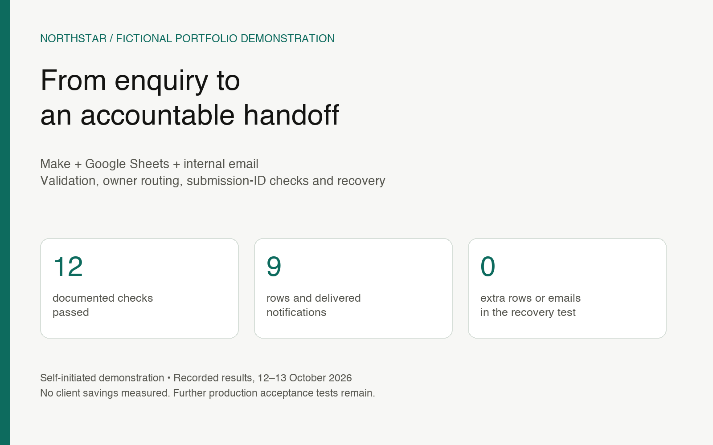

One enquiry, a clear next owner
Small agencies can lose the handoff between a website form and the person responsible for replying. I built a focused demonstration: validate an enquiry, record it in one shared register, select an owner and send one internal notification.
Northstar Studio and every enquiry are fictional. This is a self-initiated portfolio project, not client work. AI assisted implementation and troubleshooting; outcomes were checked in the running workflow, spreadsheet and inbox. No business time savings or revenue improvement were measured.

How the workflow works
- Receive seven fields through an API-key-protected webhook.
- Validate required inputs, normalize email and choose an owner: website build → Maya; website care → Theo; anything else → manual review.
- Check and reserve the stable submission ID in a Make data store.
- Write one Google Sheets row using Raw input, so formula-like text stays text.
- Send an internal email to a fixed, authorized recipient with escaped enquiry content.
- Finalize the same row and mark the ledger record completed.
A repeated ID is a replay; the same person with a new ID can be a valid new enquiry. The demo verifies owner labels using one shared test inbox, rather than three separate destinations.
Testing the failure path
Ten fixtures checked both known owners, fallback routing, repeated IDs, a new enquiry from the same address, malformed input, normalization and literal spreadsheet text. An actual private-form submission added the eleventh check.
For the twelfth check, I deliberately broke the final spreadsheet update after the email had been accepted. The incomplete execution retained the failed step. After repair, manual recovery ran only the remaining update and ledger completion. The existing row finalized and the matching email remained once.
Final recorded outcome: 12 passed checks, 9 rows, 9 delivered notifications and 9 completed ledger records. Recovery added no duplicate row or email.
Normal accepted enquiries used 8 Make credits. This is a small-sample usage observation, not a performance or delivery promise.
A handover someone can inspect
The public materials include a reconnect-required Make template, fictional fixtures, an offline validator, a private presenter form, a header-only register and documented results. Account bindings, webhook credentials, personal inbox details and private execution links are excluded.
The scenario is paused. The template requires new connections and retesting; it has not been imported into a second account. A public form needs a supported server-side integration that keeps its credentials private.
What remains before a client launch
Test closely timed duplicate arrivals, failure before email acceptance, delivered failure alerts, expired connections, sustained volume and ambiguous timeouts. Agree validation feedback, ownership, monitoring and software costs for the client's actual form and accounts.
A submission ledger is not an exactly-once guarantee across arbitrary outages. Check the register and sent messages before retrying an uncertain external action. The notified timestamp records status finalization and may be later than email acceptance during recovery.